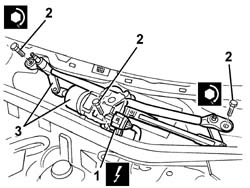

5050B38 WINDSCREEN WIPER ASSEMBLY - R+R OR REPAIR
- Path
- Procedures > 50 AUXILIARY UNITS > 5050 SCREEN WASHERS AND HEADLAMP WASH/WIPE > 5050B WINDSCREEN WASH/WIPE > 5050B38 WINDSCREEN WIPER ASSEMBLY - R+R OR REPAIR
- Kind
- repair procedure (removal / refitting; the operation number is the code)
- Applies to
- engines: 2.0 JTS, 3.2 V6, 1.9 JTD 16V; all production periods
- Interactive page
- https://sloeber94.github.io/elrnDB-aGt/en/#/125001569
Applies to: engines: 2.0 JTS, 3.2 V6, 1.9 JTD 16V; all production periods
 Removing
Removing
 Refitting
RefittingOp. 5050B34 WINDSCREEN WIPER ARM/S COMPLETE WITH BLADE - R+R
(right and left)
Op. 7055A18 L/H OR R/H SIDE RUBBING STRIP DECORATIVE SEAL - R+R.
1. Disconnect the electrical connection.
Name | Connector | |
|---|---|---|
1 | Windscreen wiper motor | See N15 WINDSCREEN WIPER MOTORS |
2. Undo the bolts.
3. Remove the windscreen wiper assembly.

Applies to: engines: 2.0 JTS, 3.2 V6, 1.9 JTD 16V; all production periods
Refitting
RemovingCheck that the windscreen wiper assembly is not damaged.
 | Fastening | Component | Ø | Value (daNm) |
|---|---|---|---|---|
- | Bolt | WINDSCREEN WIPER ASSEMBLY | M6 | 1.0 |
Position the windscreen wiper assembly.
Connect the electrical connection.
Tighten the bolts.
Op. 7055A18 L/H OR R/H SIDE RUBBING STRIP DECORATIVE SEAL - R+R.
Op. 5050B34 WINDSCREEN WIPER ARM/S COMPLETE WITH BLADE - R+R
(right and left)
Check the operation of the windscreen wiper.
Topics linked from this page (2)
- 5050B34 WINDSCREEN WIPER ARM/S COMPLETE WITH BLADE - R+R
- 7055A18 L/H OR R/H SIDE RUBBING STRIP DECORATIVE SEAL - R+R